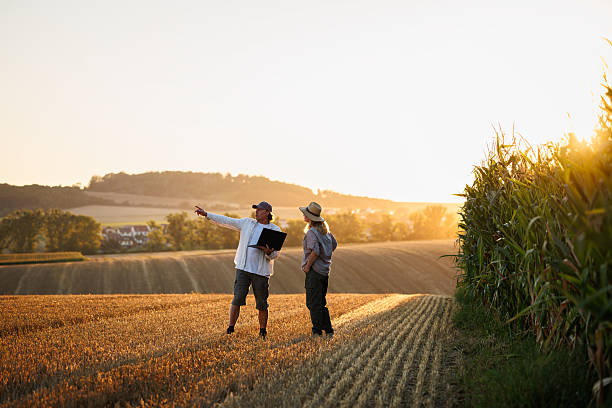
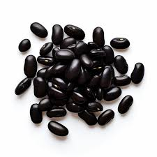

OKAFOR GRAIN AND OILSEEDS
Connecting farms to food markets.
We work across agricultural commodity sourcing, trading and value addition, connecting farm produce with the people and industries that depend on it.

OKAFOR GRAIN AND OILSEEDS
We work across agricultural commodity sourcing, trading and value addition, connecting farm produce with the people and industries that depend on it.

COMMODITY SOURCING
We build connections with farmers and agricultural suppliers to help bring quality produce into organised markets.

FOOD AND AGRICULTURE
From grains and legumes to oil-bearing crops, we see opportunities to develop better commodity supply chains and create more value from agricultural produce.

Okafor Grain and Oilseeds is an agricultural commodities business focused on sourcing, trading and developing value from food crops and oil-bearing agricultural produce.
We connect farmers, suppliers, processors and buyers through organised commodity supply chains. Our focus is on making agricultural produce more accessible, useful and commercially valuable.
Explore our capabilities →We focus on selected food crops, legumes and oil-bearing crops that support food production, processing and trade.
 01
01
 02
02
An important source of plant protein with strong food market demand.
Enquire about beans ↗
03Traditional African food crop, also known locally as Akidi.
Enquire about Akidi ↗ 04
04
A versatile oilseed used in food production, oil extraction and processing.
Enquire about groundnut ↗ 05
05
 06
06
The oil-bearing fruit used in the production of crude palm oil.
Enquire about palm fruit ↗We work to connect agricultural production with organised markets and opportunities for value creation.
 01
01
Connecting with farmers, producers and suppliers to source agricultural commodities for different market needs.
 02
02
Bringing produce together, organising supply and helping connect available commodities with buyers.
 03
03
Trading agricultural commodities and developing opportunities for cleaning, grading, processing and packaging.
Agricultural value does not end at harvest. The way produce is sourced, handled, stored, traded and processed shapes its value in the market.
We aim to strengthen these connections and build a business around dependable agricultural commodity supply.
Connect With Us ↗Building relationships at the source of agricultural production.
Connecting available produce with reliable market opportunities.
Supporting the markets and businesses that depend on agricultural commodities.
We welcome conversations with farmers, agricultural producers, commodity suppliers, processors and bulk buyers interested in building productive business relationships.
Looking to source agricultural produce, supply commodities or explore a business partnership? We'd like to hear from you.
Send an Enquiry ↗